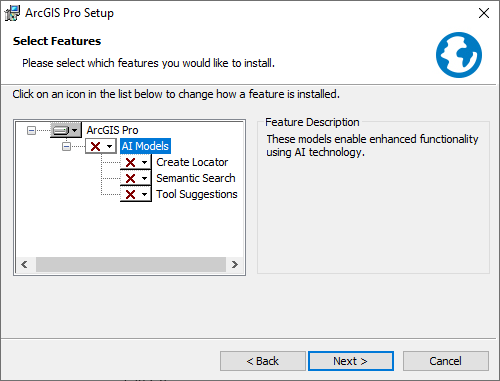

Install ArcGIS Pro
After you download ArcGIS Pro and optional components, and review the system requirements, you can install the software.
 Tip:
Tip:These instructions guide you through the installation of ArcGIS Pro using a wizard. You can also install ArcGIS Pro silently from the command line.
You can make either a per-machine installation (the default) or a per-user installation of ArcGIS Pro. A per-machine installation allows any user to run ArcGIS Pro on the computer where it is installed. A per-user installation allows only the user who installs it to run the application.
The default installation location for a per-machine installation is <System Drive>\Program Files\ArcGIS\Pro. The default installation location for a per-user installation is <System Drive>\Users\<username>\AppData\Local\Programs\ArcGIS\Pro.
 Note:
Note:To make a per-user installation on supported Windows Server operating systems, the registry key HKEY_LOCAL_MACHINE\SOFTWARE\Policies\Microsoft\Windows\Installer must contain the REG_DWORD data type DisableMSI, with a value of 0. For more information, see the Microsoft help topic DisableMSI.
Upgrading ArcGIS Pro directly from a retired version is not supported. To upgrade a retired version, you must uninstall the software before running the latest ArcGIS Pro setup. Retired versions of ArcGIS Pro are listed on the ArcGIS Pro Life Cycle page.
Install ArcGIS Pro and optional components
You must install ArcGIS Pro before installing optional components. Follow the steps below to install ArcGIS Pro:
- Browse to the location where you downloaded ArcGIS Pro, and double-click the executable file (.exe) to start the installation process.
- Accept the destination folder to which files are extracted or click Browse to browse to a different folder.
The default destination folder is <System Drive>\Users\<username>\Documents\ArcGIS Pro <version>.
- Click Next.
A message informs you when the files have been successfully extracted. The Launch the setup program check box is checked by default.
Note:To install the software later, uncheck the Launch the setup program check box. When you're ready to install, browse to the destination folder and double-click ArcGISPro.msi.
- Click Close.
- On the ArcGIS Pro Setup splash screen, click Next.
- Under Welcome to the ArcGIS Pro Setup program, read the information, take recommended actions, and click Next.
- Review the master agreement and choose an option:
- If you agree to the terms, click the option to accept the agreement and click Next.
- If you do not agree to the terms, click Cancel to exit the installation.
- Choose an installation context option:
- Click Anyone who uses this computer (the default) for a per-machine installation.
- Click Only for me for a per-user installation.
Note:You must have administrative privileges to make a per-machine installation.
- Click Next.
- Accept the default location based on your installation context option, or click Change to specify a different folder.
The default location for the Anyone who uses this computer option is <System Drive>\Program Files\ArcGIS\Pro. The default location for the Only for me option is <System Drive>\Users\<username>\AppData\Local\Programs\ArcGIS\Pro.
Note:If you choose a location other than the default, it is recommended that the path include a folder and not be the root location of a drive. The modified path does not append \ArcGIS\Pro\ by default.
- Click Next.
- Choose whether to install one or more AI Models features.

The AI Models features for semantic search and geoprocessing tool suggestions are not installed by default.
- Click Next.
Under Ready to Install the Program, the option to participate in the Esri User Experience Improvement program is checked by default. Uncheck the box if you don't want to participate. (You can change your participation status at any time after ArcGIS Pro is installed.)
- Click Install.
When the installation is completed, the Run ArcGIS Pro now option is checked by default. Uncheck the box if you don't want to start the application immediately.
- Click Finish.
Follow the same process to install optional components you downloaded, such as the offline help system.
Note:You need an authorized license to use ArcGIS Pro. By default, you start ArcGIS Pro with a Named User license. However, if your organization uses a different license type, you may need to start ArcGIS Pro with a Concurrent Use license or a Single Use license.
Uninstall ArcGIS Pro
Uninstall ArcGIS Pro using either the Control Panel or Windows Settings.
Access the Control Panel from the Start menu or search box. Under Programs, click Uninstall a program. Select ArcGIS Pro from the list of programs and features, and click Uninstall. On the Windows Installer message, click Yes to confirm that you want to uninstall.
Alternatively, access the Windows Settings from the Start menu. Browse to Apps & features, select ArcGIS Pro in the list of programs, click Uninstall, and click Uninstall on the pop-up message that appears. On the Windows Installer message, click Yes to confirm that you want to uninstall.